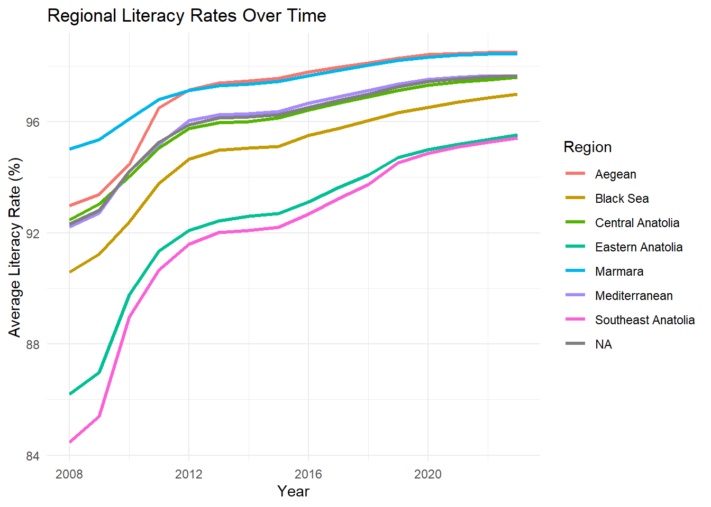
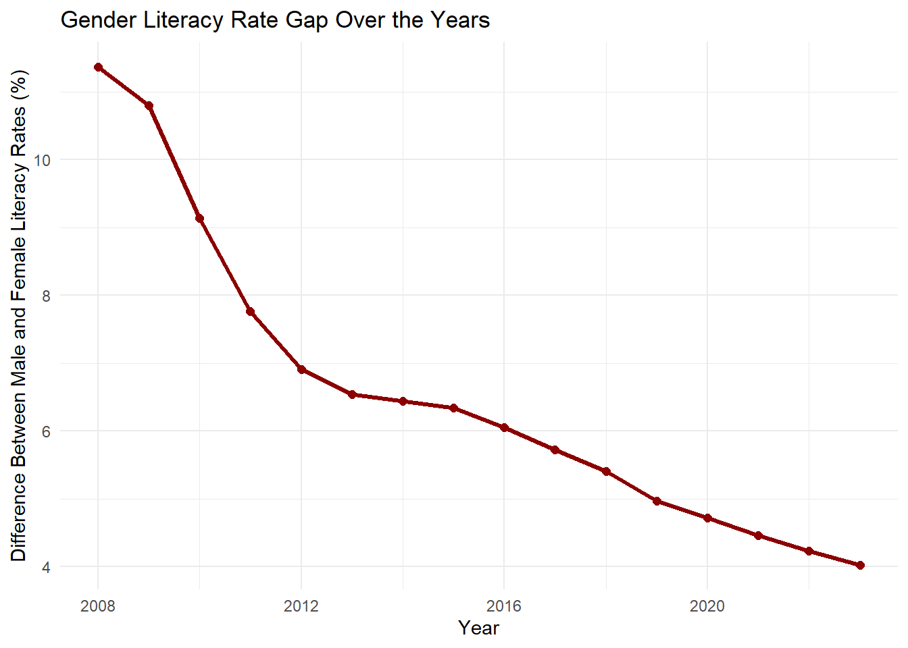
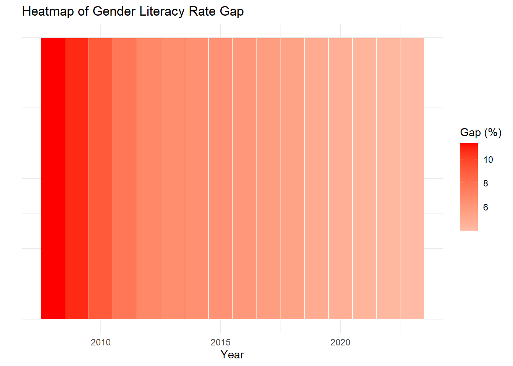

library(dplyr)
#calling the data
data <- readxl::read_excel("EMU430-DATA.xls")
#creating 'REGIONS' column
{
regions <- data.frame(
Province_code = 1:81
)
regions <- regions %>%
mutate(regions = case_when(
Province_code %in% c(1,7,15,31,32,33,46,80) ~ "Mediterranean",
Province_code %in% c(2,21,27,47,56,63,72,73,79) ~ "Southeast Anatolia",
Province_code %in% c(3,9,20,35,43,45,48,64) ~ "Aegean",
Province_code %in% c(4,12,13,23,24,25,30,36,44,49,62,65,75,76) ~ "Eastern Anatolia",
Province_code %in% c(5,8,14,19,28,29,37,52,53,55,57,60,61,67,69,74,78,81) ~ "Black Sea",
Province_code %in% c(6,18,26,38,40,42,50,51,58,66,68,70,71) ~ "Central Anatolia",
Province_code %in% c(10,11,16,17,22,34,39,41,54,59,77) ~ "Marmara",
))
data <- data %>%
rename(Province_code = `Province code`)
data <- data %>%
left_join(regions)
}Data
1. Study Overview
1.1 General Information About the Data
Education level data for Turkey’s provinces and gender between 2008-2023.
Data source: Education Data Between 2008 and 2023
1.2 Why We Selected This Data and Our Objectives
We chose this dataset because it provides detailed insights into Turkey’s literacy levels from 2008 to 2023, segmented by gender, cities, and regions. It is particularly suitable for applying the visualization and statistical techniques learned in class, making it an excellent choice for our study.
Our primary objective is to analyze changes in educational levels over the years, focusing on gender, regional, and city-based differences. By utilizing R programming for visualization and statistical analyses, we aim to identify trends and disparities to support informed policymaking and promote educational equality.
2 Importing and Preprocessing Data
Before importing the dataset, we performed manual cleaning by removing Turkish text and extraneous information.
Subsequently, I enriched the dataset by adding region information using the ‘dplyr’ library.
2.1 Regional Data Breakdown
Our education data varies from city to city, and in this way, in addition to seeing which city has which level of education, we can also see how it has changed over the years, making educational inferences about that region and interpreting what kind of developments have occurred.
# Required Libraries
library(readxl)Warning: package 'readxl' was built under R version 4.4.2library(ggplot2)
library(dplyr)
# Load the dataset
# Adjust the sheet name and path based on your actual dataset
data <- read_excel("EMU430-DATA.xls", sheet = 1)New names:
• `Male Primary Education Graduates` -> `Male Primary Education Graduates...18`
• `Male Primary Education Graduates` -> `Male Primary Education Graduates...19`# Data Cleaning and Transformation
# Assuming the columns include Year, Region, and General Literacy Rate
clean_data <- data %>%
select(Year, Region, `General Population`, `General Illiterate Population`) %>%
mutate(Literacy_Rate = 100 - (`General Illiterate Population` / `General Population`) * 100) %>%
group_by(Year, Region) %>%
summarize(Average_Literacy = mean(Literacy_Rate, na.rm = TRUE))`summarise()` has grouped output by 'Year'. You can override using the
`.groups` argument.# Visualization: Regional Literacy Rates Over Time
ggplot(clean_data, aes(x = Year, y = Average_Literacy, color = Region)) +
geom_line(size = 1.2) +
labs(
title = "Regional Literacy Rates Over Time",
x = "Year",
y = "Average Literacy Rate (%)",
color = "Region"
) +
theme_minimal()Warning: Using `size` aesthetic for lines was deprecated in ggplot2 3.4.0.
ℹ Please use `linewidth` instead.
2.2 Gender-Specific Insights
By looking at our education data, we can clearly see the education status of men and women. In this way, while we can make inferences about that city, we can also comment on the development of that region with the changes it has undergone over the years.
# Required Libraries
library(readxl)
library(ggplot2)
library(dplyr)
# Load the dataset
data <- read_excel("EMU430-DATA.xls", sheet = 1)New names:
• `Male Primary Education Graduates` -> `Male Primary Education Graduates...18`
• `Male Primary Education Graduates` -> `Male Primary Education Graduates...19`# Data Cleaning and Transformation
gender_data <- data %>%
select(Year, `General Male Population`, `General Female Population`, `Male Illiterate Population`, `General Illiterate Population`) %>%
mutate(
Male_Literacy_Rate = 100 - (`Male Illiterate Population` / `General Male Population`) * 100,
Female_Literacy_Rate = 100 - ((`General Illiterate Population` - `Male Illiterate Population`) / `General Female Population`) * 100,
Literacy_Difference = Male_Literacy_Rate - Female_Literacy_Rate # Calculate the gender literacy gap
) %>%
group_by(Year) %>%
summarize(
Avg_Literacy_Difference = mean(Literacy_Difference, na.rm = TRUE),
.groups = "drop"
)
# Visualization: Line Chart for Literacy Rate Gap
ggplot(gender_data, aes(x = Year, y = Avg_Literacy_Difference)) +
geom_line(size = 1.2, color = "darkred") +
geom_point(size = 2, color = "darkred") +
labs(
title = "Gender Literacy Rate Gap Over the Years",
x = "Year",
y = "Difference Between Male and Female Literacy Rates (%)"
) +
theme_minimal()
# Required Libraries
library(readxl)
library(ggplot2)
library(dplyr)
# Load the dataset
data <- read_excel("EMU430-DATA.xls", sheet = 1)New names:
• `Male Primary Education Graduates` -> `Male Primary Education Graduates...18`
• `Male Primary Education Graduates` -> `Male Primary Education Graduates...19`# Data Transformation
gender_data <- data %>%
mutate(
Male_Literacy_Rate = 100 - (`Male Illiterate Population` / `General Male Population`) * 100,
Female_Literacy_Rate = 100 - (`Female Illiterate Population` / `General Female Population`) * 100,
Literacy_Rate_Gap = Male_Literacy_Rate - Female_Literacy_Rate # Calculate the gap
) %>%
group_by(Year) %>%
summarize(
Avg_Literacy_Gap = mean(Literacy_Rate_Gap, na.rm = TRUE),
.groups = "drop"
)
# Visualization: Bar Plot for Gender Literacy Gap Over the Years
ggplot(gender_data, aes(x = Year, y = 1, fill = Avg_Literacy_Gap)) +
geom_tile(color = "white") +
scale_fill_gradient2(low = "blue", high = "red", midpoint = 0, name = "Gap (%)") +
labs(
title = "Heatmap of Gender Literacy Rate Gap",
x = "Year",
y = "",
fill = "Gap (%)"
) +
theme_minimal() +
theme(axis.text.y = element_blank(), axis.ticks.y = element_blank())
3. Exploratory Data Analysis
In our project, we are working with a dataset sourced from the Turkish Statistical Institute (TÜİK), focusing on literacy rates in Turkey from 2008 to 2023. The data includes detailed information on literacy levels segmented by gender, region, and year, allowing us to analyze trends and disparities comprehensively.
The summarized and clean data set we have obtained is formed from 37 columns
colnames(data) [1] "Year"
[2] "Province code"
[3] "Region"
[4] "\nProvince name"
[5] "General Population"
[6] "General Male Population"
[7] "General Female Population"
[8] "General Illiterate Population"
[9] "Male Illiterate Population"
[10] "Female Illiterate Population"
[11] "General Literates Without Diploma"
[12] "Male Literates without a diploma"
[13] "Female Literates without a diploma"
[14] "General Primary School Graduates"
[15] "Male Primary School Graduates"
[16] "Female Primary School Graduates"
[17] "General Primary Education Graduates"
[18] "Male Primary Education Graduates...18"
[19] "Male Primary Education Graduates...19"
[20] "General Lower Secondary School Graduates"
[21] "Male Lower Secondary School Graduates"
[22] "Female Lower Secondary School Graduates"
[23] "General Upper Secondary School Graduates"
[24] "Male Upper Secondary School Graduates"
[25] "Female Upper Secondary School Graduates"
[26] "General Universities and Other Higher Educational Institutions Graduates"
[27] "Male Universities and Other Higher Educational Institutions Graduates"
[28] "Female Universities and Other Higher Educational Institutions Graduates"
[29] "General Master Graduates"
[30] "Male Master Graduates"
[31] "Female Master Graduates"
[32] "General Doctorate Graduates"
[33] "Male Doctorate Graduates"
[34] "Female Doctorate Graduates"
[35] "General Unknown"
[36] "Male Unknown"
[37] "Female Unknown" [1] "Year" [2] "Province code" [3] "Region" [4] "\nProvince name" [5] "General Population" [6] "General Male Population" [7] "General Female Population" [8] "General Illiterate Population" [9] "Male Illiterate Population" [10] "Female Illiterate Population" [11] "General Literates Without Diploma" [12] "Male Literates without a diploma" [13] "Female Literates without a diploma" [14] "General Primary School Graduates" [15] "Male Primary School Graduates" [16] "Female Primary School Graduates" [17] "General Primary Education Graduates" [18] "Male Primary Education Graduates...18" [19] "Male Primary Education Graduates...19" [20] "General Lower Secondary School Graduates" [21] "Male Lower Secondary School Graduates" [22] "Female Lower Secondary School Graduates" [23] "General Upper Secondary School Graduates" [24] "Male Upper Secondary School Graduates" [25] "Female Upper Secondary School Graduates" [26] "General Universities and Other Higher Educational Institutions Graduates" [27] "Male Universities and Other Higher Educational Institutions Graduates" [28] "Female Universities and Other Higher Educational Institutions Graduates" [29] "General Master Graduates" [30] "Male Master Graduates" [31] "Female Master Graduates" [32] "General Doctorate Graduates" [33] "Male Doctorate Graduates" [34] "Female Doctorate Graduates" [35] "General Unknown" [36] "Male Unknown" [37] "Female Unknown"